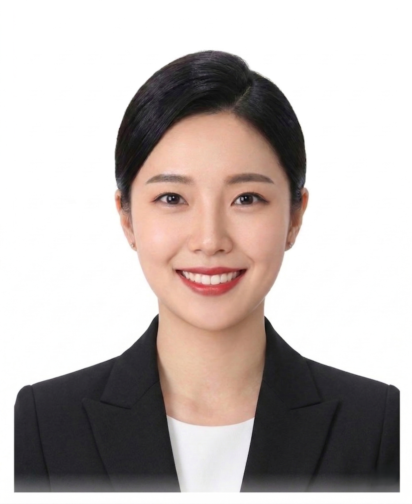

WonderfulCrew AI는 에미레이트항공 일등석 출신 대표와 22개국 현직 승무원 자문단의 실전 경험이 학습된 전문 코칭 엔진입니다. 이곳에서 작성되는 자소서와 CV는 승무원·하이엔드 서비스직 면접에 완전히 최적화되어 있습니다.
ID Photo
합격하는 증명사진
미소는 필수!
승무원 증명사진에서 가장 중요한 것은 미소입니다. 입을 다물면 절대 안 됩니다. 윗니가 보이는 활짝 웃는 스마일이 기본이고, 눈도 미소 가득해야 합니다.
입: 자연스럽게 벌려서 윗니가 보이도록. 억지 미소가 아닌 진짜 웃는 표정
눈: 눈웃음이 핵심! 눈이 웃지 않으면 입만 웃는 어색한 사진이 됨
연습: 거울 보며 "위스키~" 하면서 자연스러운 미소 연습. 눈 먼저 웃고 입이 따라가게
TIP: 면접관은 사진에서 '이 사람이 승객 앞에 서면 어떤 느낌일까'를 상상합니다. 따뜻하고 신뢰감 있는 밝은 미소가 첫 관문입니다. 승객이 환영받는 느낌을 받는 스~마일을 보여주세요.
예시 사진
승무원의 기본은 미소! 활짝 웃는 사진으로 면접관에게 좋은 첫인상을 남기세요!

좋은 예시 (이미지 추후 업로드)
';">
✅ 좋은 예시
윗니가 드러나도록 활짝 웃기 단정한 헤어, 깔끔한 의상
나쁜 예시 (이미지 추후 업로드)
';">
❌ 나쁜 예시
입을 다물거나 어중간한 미소는 안돼요
외국항공사 증명사진 TIP
이미지 추후 업로드
';">
외국항공사는 다양한 컬러의 자켓도 괜찮아요. 국내항공사와 달리 개성과 활기를 중요하게 보기 때문에 레드, 블루 등 밝은 컬러의 자켓도 좋은 인상을 줄 수 있습니다.
단, 어떤 컬러든 환한 미소는 필수!
의상 & 헤어
의상: 깔끔한 정장. 흰 블라우스 + 네이비/블랙 자켓이 가장 무난. 외국항공사는 컬러 상관 없음
머리: 단정하게 정리. 풀어서 찍으면 절대 안 됨. 올림머리 또는 깔끔한 묶음
메이크업: 면접 때와 동일한 수준으로. 사진관 조명이 강하므로 평소보다 조금 더 진하게
악세사리: 작은 귀걸이 정도. 목걸이, 큰 귀걸이는 제거
사진 촬영 팁
사진관 선택: 승무원 증명사진 전문 사진관 추천. 조명과 각도를 잘 잡아줌
배경: 흰색 또는 밝은 회색이 기본. 항공사별 지정 배경색 확인
고개 각도: 정면 또는 살짝(5~10도) 틀어서. 턱을 살짝 당기면 라인이 살아남
어깨: 양쪽 어깨가 수평이 되도록. 한쪽이 올라가면 비대칭으로 보임
보정: 과도한 보정 금지. 실물과 다르면 면접장에서 마이너스
국내 vs 외국: 국내 항공사는 반명함판(3x4cm) 사진이 기본. 외국 항공사는 여권 사이즈 + 전신 사진을 요구하는 경우가 많으니 사전에 확인하세요.
Korean Airlines
국내 항공사 자기소개서
핵심 원칙
두괄식 작성: 핵심 메시지를 첫 문장에 배치. 인사담당자는 수백 장을 읽으므로 첫 줄에서 눈을 사로잡아야 합니다
구체적 경험: "서비스 정신이 뛰어납니다" 같은 추상적 표현 대신, 실제 경험과 숫자로 증명
짧은 문장: 한 문장이 3줄을 넘기면 읽기 힘듦. 한 문장 = 한 가지 메시지
항공사 맞춤: 지원하는 항공사의 가치와 나의 경험을 연결. 복붙은 바로 티남
솔직함: 과장하면 면접에서 탄로남. 작은 경험도 진정성 있게 쓰면 충분
항목별 작성 가이드
지원 동기: "왜 승무원인가" + "왜 이 항공사인가"를 분리해서 작성. 두괄식으로 결론 먼저
성장 과정: 인생 전체를 나열하지 말 것. 승무원과 연결되는 한 가지 에피소드에 집중
장단점: 장점은 서비스 직무와 연결. 단점은 극복 과정과 함께 제시
서비스 경험: 구체적 상황 → 내 행동 → 결과 (STAR 기법) 으로 구조화
입사 후 포부: 현실적이고 구체적으로. "글로벌 인재가 되겠습니다" 같은 뻔한 표현 금지
합격 자기소개서 예시
합격 예시 · 지원 동기
"5성급 호텔 프론트에서 2년간 매일 50명 이상의 고객을 응대하며, 서비스의 본질이 '문제 해결'이 아니라 '기대를 넘는 경험 창조'라는 것을 현장에서 배웠습니다.
가장 기억에 남는 순간은 체크인 오류로 화가 난 VIP 고객을 대응했던 경험입니다. 저는 즉시 객실을 스위트로 업그레이드하고, 고객이 좋아하시는 와인 브랜드를 확인하여 객실에 미리 준비해두었습니다. 추가로 '불편을 드려 죄송합니다'라는 손편지와 웰컴 과일 바스켓을 직접 세팅했습니다. 그 고객은 체크아웃 시 '이 호텔의 팬이 되었다. 당신 때문에 다시 올 것이다'라는 후기를 남기셨고, 이후 3번이나 재방문하시며 저를 지정 요청하셨습니다.
이 경험은 제게 두 가지를 가르쳐주었습니다. 첫째, 고객의 컴플레인은 위기가 아니라 신뢰를 쌓을 수 있는 가장 값진 기회라는 것. 둘째, 진정한 서비스는 매뉴얼에 있는 것이 아니라 고객 한 분 한 분의 상황에 맞게 '즉석에서 창조'하는 것이라는 점입니다.
대한항공이 추구하는 'Excellence in Flight'의 가치가 바로 이것이라 확신합니다. 저는 기내에서 승객이 요청하기 전에 먼저 필요를 파악하고, 작은 배려로 '이 항공사를 다시 타고 싶다'는 인상을 남기는 승무원이 되겠습니다. 유니폼을 입는 순간, 앞선 선배들이 쌓아온 대한항공의 신뢰를 제가 이어받겠다는 책임감으로 매 비행에 임하겠습니다."
포인트: 첫 문장에서 바로 경험을 던지고(두괄식), 구체적 상황과 결과를 보여주며, 항공사의 가치와 자연스럽게 연결한 구조입니다.
자주 하는 실수
"어릴 때부터 승무원이 꿈이었습니다" 수천 명이 똑같이 씀. 차별화 제로
"서비스 마인드가 뛰어납니다" 구체적 근거 없는 자기 주장은 설득력 없음
문단 하나가 10줄 이상 읽기 포기. 3~4줄로 끊을 것
여러 항공사에 같은 자소서 항공사명만 바꾼 티가 바로 남
과도한 미사여구 "하늘 위의 천사가 되어" 같은 표현은 유치하게 보일 수 있음
실제 합격생 자기소개서 더 보기
대한항공, 아시아나, 에미레이트 등 실제 합격생의 자기소개서/CV를 확인하세요.
실제 합격생 자기소개서 샘플
개인 식별 정보는 비공개 처리되어 있습니다.
International Airlines
외국 항공사 CV(이력서) 작성
핵심: Work Experience가 가장 중요
외국 항공사 CV에서 가장 중요한 섹션은 일 경험(Work Experience)입니다. 학력보다 실무 경험을 훨씬 중시합니다. 서비스업, 호텔, 레스토랑, 리테일 등 고객 접점 경험이 가장 강력합니다.
형식은 자유: 정해진 양식 없음. 깔끔하고 읽기 쉬우면 OK
길이: 1~2페이지. 길게 쓴다고 좋은 게 아님
사진: 대부분 사진 포함 요구. 상반신 또는 전신
언어: 영어로 작성
CV 구성 순서
Contact Information: 이름, 이메일, 전화번호, 국적, 거주지
Personal Summary: 2~3줄로 나를 요약. 경험 + 강점 + 지원 동기
Work Experience: 최신 → 과거순. 직함, 회사명, 기간, 주요 업무/성과
Education: 최종 학력. 전공이 관련 있으면 강조
Skills: 언어(한국어/영어/기타), 수영 가능 여부, 자격증
Additional: 봉사활동, 해외 경험, 취미(선택)
커버레터 (Cover Letter)
필수는 아니지만 제출하라고 하는 항공사도 있습니다 (에미레이트, 카타르 등). 제출 가능하면 무조건 내는 것이 유리합니다.
A4 1장 이내
왜 이 항공사인지 + 나의 핵심 강점 + 기여할 수 있는 점
CV에 없는 '나만의 이야기'를 담을 것
합격 CV 예시
Sample CV
JANE KIM
Seoul, South Korea | jane.kim@email.com | +82-10-1234-5678
Nationality: Korean | DOB: 15 March 1998 | Height: 168cm
PERSONAL SUMMARY
Enthusiastic hospitality professional with 3 years of customer-facing experience in luxury hotels. Fluent in Korean and English with strong interpersonal skills. Passionate about delivering memorable service and excited to bring my skills to the sky.
WORK EXPERIENCE
Front Desk Agent | Grand Hyatt Seoul | Mar 2023 – Present
- Welcomed and assisted 100+ guests daily, handling check-in/out and special requests
- Resolved guest complaints with empathy, achieving 95% positive feedback score
- Coordinated with housekeeping and F&B teams to ensure seamless service
Service Crew | Starbucks Korea | Jun 2021 – Feb 2023
- Served 200+ customers per shift in a high-volume store
- Trained 5 new team members on service standards and POS system
- Received "Partner of the Quarter" award twice
EDUCATION
Bachelor of Tourism Management | Sejong University | 2017 – 2021
SKILLS
Languages: Korean (Native), English (Fluent – TOEIC 920)
Swimming: Competent (50m unaided)
First Aid: CPR Certified (Korean Red Cross)
ADDITIONAL
Volunteer: English tutor for underprivileged youth (2019 – 2020)
Travel: Visited 12 countries across Asia and Europe
포인트: Work Experience를 가장 상세하게 작성하고, 숫자(100+ guests, 95% feedback)로 성과를 증명합니다. Personal Summary에서 핵심을 3줄로 요약한 점도 좋습니다.
자주 하는 실수
Work Experience 없이 학력만 나열 경험이 없으면 아르바이트, 봉사활동이라도 넣을 것